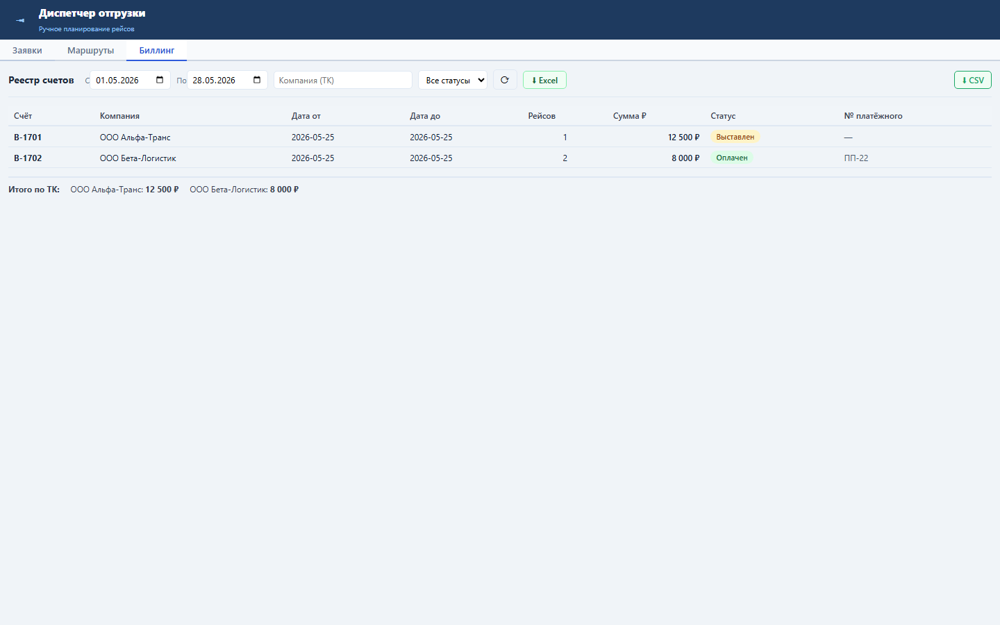
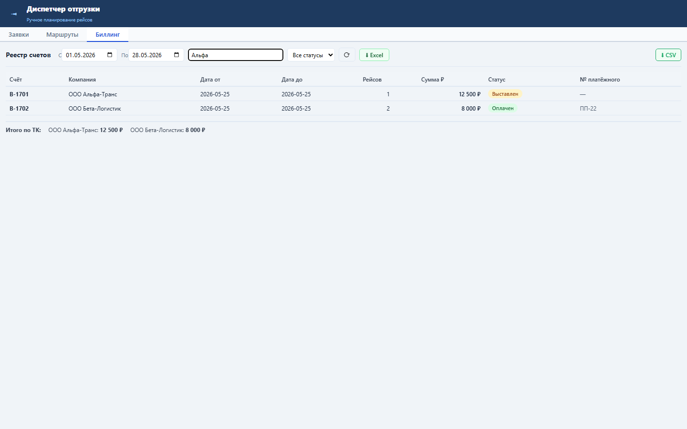
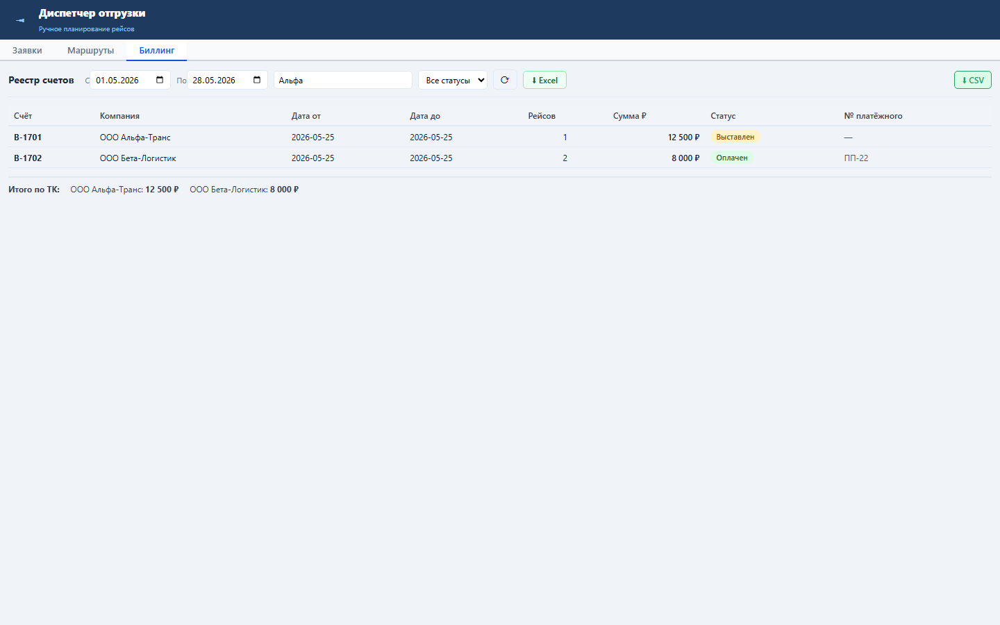

Зачем этот блок
Реестр счетов нужен для ежедневного контроля выставленных, закрытых и оплаченных счетов по транспортным компаниям.
Вход
Биллинг-заказы и связанные рейсы.
Биллинг-заказы и связанные рейсы.
Процесс
Фильтрация по датам, ТК и статусу.
Фильтрация по датам, ТК и статусу.
Результат
Таблица счетов, итоги по ТК и CSV/Excel.
Таблица счетов, итоги по ТК и CSV/Excel.
Как работать



Бизнес-процессы
- Контроль выставленных счетов.
- Поиск счетов по ТК и периоду.
- Сверка итогов по транспортной компании.
- Выгрузка реестра для бухгалтерии.
Результат проверки
Sprint 17 закрыт: backend tests 12 passed, UI smoke passed, load NFR passed.